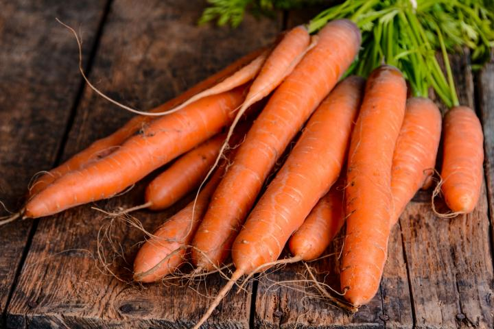

Carrots
$4.50 per kg
Carrots can be eaten raw as snacks, or cooked and used in savoury and some sweet dishes, such as carrot cake or muffins. They can be boiled, steamed, baked, roasted, barbecued, stir fried or microwaved.

Cucumber
$4.50 per kg
Cucumbers are a popular salad vegetable. While low in most nutrients cucumbers are a source of vitamin c and have a high water content. Apart from in salads, raw cucumber can also be sliced and used like crackers with dips, or in a cold soup, chopped, sauteed or juiced.
Cabbage
$5.00 per kg
Cabbages are from the brassica family and are one of the oldest known vegetables.